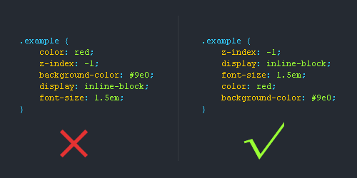
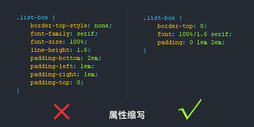
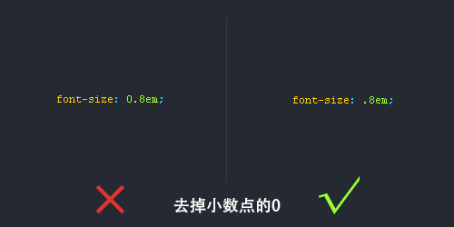
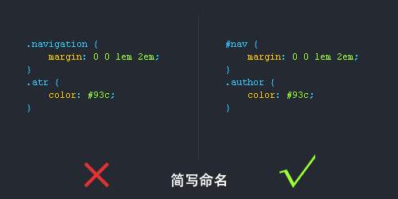
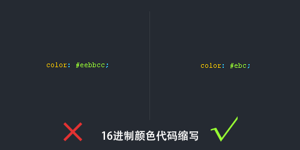
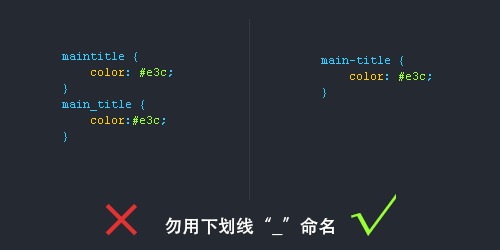
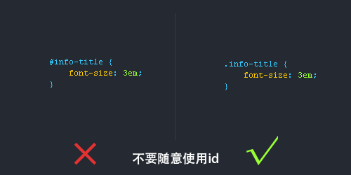
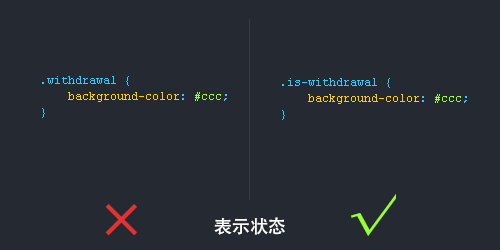

关于CSS的书写规范和顺序，是大部分前端er都必须要攻克的一门关卡，如果没有按照良好的CSS书写规范来写CSS代码，会影响代码的阅读体验。这里总结了一个CSS书写规范、CSS书写顺序供大家参考，这些是参考了国外一些文章以及我的个人经验总结出来，我想对写CSS的前端用户来说是值得学习的。
1.位置属性 (position, top, right, z-index, display, float等)
2.大小 (width, height, padding, margin)
3.文字系列 (font, line-height, letter-spacing, color- text-align等)
4.背景 (background, border等)
5.其他 (animation, transition等)

CSS有些属性是可以缩写的，比如padding,margin,font等等，这样精简代码同时又能提高用户的阅读体验。


很多用户都喜欢简写类名，但前提是要让人看懂你的命名才能简写哦！

有些颜色代码是可以缩写的，我们就尽量缩写吧，提高用户体验为主。

1.长名称或词组可以使用中横线来为选择器命名。
2.不建议使用“_”下划线来命名CSS选择器，为什么呢？

id在JS是唯一的，不能多次使用，而使用class类选择器却可以重复使用，另外id的优先级优先与class，所以id应该按需使用，而不能滥用。

有时候可以给选择器添加一个表示状态的前缀，让语义更明了，比如下图是添加了“.is-”前缀。

头：header
内容：content/container
尾：footer
导航：nav
侧栏：sidebar
栏目：column
页面外围控制整体佈局宽度：wrapper
左右中：left right center
登录条：loginbar
标志：logo
广告：banner
页面主体：main
热点：hot
新闻：news
下载：download
子导航：subnav
菜单：menu
子菜单：submenu
搜索：search
友情链接：friendlink
页脚：footer
版权：copyright
滚动：scroll
内容：content
标签：tags
文章列表：list
提示信息：msg
小技巧：tips
栏目标题：title
加入：joinus
指南：guide
服务：service
注册：regsiter
状态：status
投票：vote
合作伙伴：partner
/* Header */
内容区
/* End Header */
1)页面结构
容器: container
页头：header
内容：content/container
页面主体：main
页尾：footer
导航：nav
侧栏：sidebar
栏目：column
页面外围控制整体佈局宽度：wrapper
左右中：left right center
(2)导航
导航：nav
主导航：mainnav
子导航：subnav
顶导航：topnav
边导航：sidebar
左导航：leftsidebar
右导航：rightsidebar
菜单：menu
子菜单：submenu
标题: title
摘要: summary
(3)功能
标志：logo
广告：banner
登陆：login
登录条：loginbar
注册：register
搜索：search
功能区：shop
标题：title
加入：joinus
状态：status
按钮：btn
滚动：scroll
标签页：tab
文章列表：list
提示信息：msg
当前的: current
小技巧：tips
图标: icon
注释：note
指南：guild
服务：service
热点：hot
新闻：news
下载：download
投票：vote
合作伙伴：partner
友情链接：link
版权：copyright
1.一律小写;
2.尽量用英文;
3.不加中槓和下划线;
4.尽量不缩写，除非一看就明白的单词。
主要的 master.css
模块 module.css
基本共用 base.css
布局、版面 layout.css
主题 themes.css
专栏 columns.css
文字 font.css
表单 forms.css
补丁 mend.css
打印 print.css